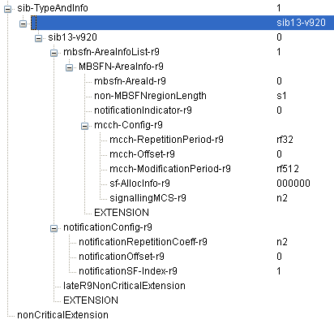

LTE Quick Reference Go Back To Index Home : www.sharetechnote.com
MBSFN (Multicast Broadcase Single Frequency Network)
With the introduction of mobile device and mobile network, one thing a lot of mobile users wanted to have was "I want to see TV (Movies etc on my mobile phone.". A set of first solutions to this requirement was DVB-H/DVB-T, DMB, ISDB-T, MediaFLO etc. These technlogies are still very widely used in some contries. There are many mobile device supporting both normal mobile phone capability and the mobile TV reception functionality. So for the users point of view, it was very good since they can have both mobile phone and TV on a single device with a small extra cost. But for the service provider's point of view, it is not that simple story. Mobile phone network and mobile TV network is totally different and separate. So it would be pretty big investment to deploy the network for mobile TV.
Then many people start having another idea saying "Why don't we prvide this kind of mobile TV (Broadcasting/Multicasting) service through the existing mobile phone network/technology ?".
The intial implementation of this idea was MBMS (Multimedia Broadcast Multicast Services) in UMTS and its LTE counter part is MBSFN (Multimedia Broadcast Single Frequency network or Multicase Broadcast Single Frequency Network).
Overall concept is as follows. A eNodeB can transmit the same data (idential data) to multiple UE simulteneously. In some case, multiple eNodeB can transmit the identical data simultaneously so that UE can receive the same data from multiple eNodeBs.

LTE uses totally separate channel (logical cand transport channel) for MBSFN. As you may guess, it uses MCCH for control information and MTCH for data transmission.

Since the MBSFN data is carried by the same physical channel which is used for mobile comunication, we have to use carefull scheduling for MBSFN so that it would not interfer normal mobile communication. This physical layer scheduling is specified in SIB2 as shown below.

MBSFN control channel information and MBSFN Area specification is specified by SIB13 as shown below.
